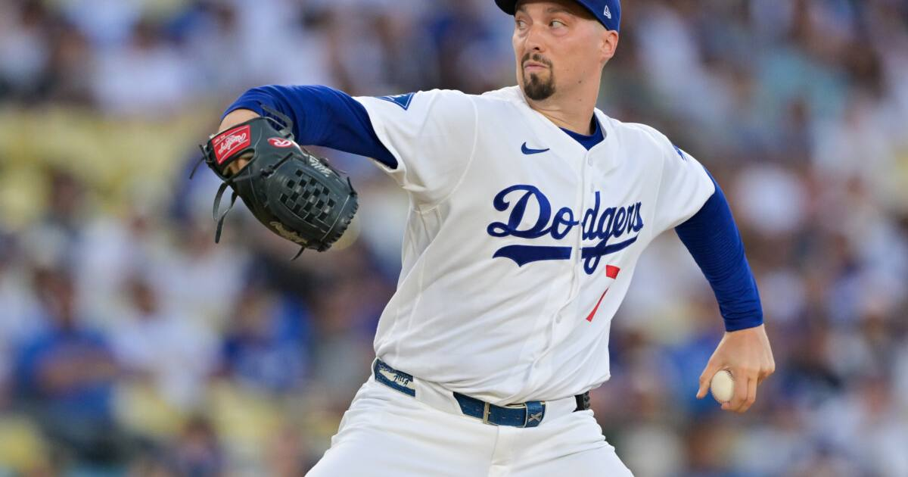

Dodgers down 2-0, hand Game 3 to Snell tonight
Milwaukee's bullpen retired the final 15 Dodgers to take a 2-0 NLCS lead — and the Dodgers answer with Blake Snell tonight at Dodger Stadium against a pitcher they've already beaten twice.

Disclosure: this post contains affiliate links. I earn a commission on qualifying purchases.
The Brewers have the Dodgers exactly where they want them. Milwaukee's bullpen retired the final 15 Dodgers in a row to seal Monday's Game 2 win, 7-4 — the Brewers' first-ever 2-0 lead in a best-of-seven series. Tonight, the Dodgers' answer is Blake Snell, who blanked these Brewers in last year's NLCS, opposite Brewers lefty Robert Gasser, a pitcher the Dodgers have already beaten twice this season.
How the Dodgers got here
Los Angeles threw its two aces at the first two games in Milwaukee — Tarik Skubal and Yoshinobu Yamamoto — and lost both. The Brewers' bullpen did the killing in Game 2: five straight perfect innings from Dustin May, JoJo Romero, Abner Uribe, and Aaron Ashby to close out the 7-4 win.
The Game 3 matchup
History vs. tonight's opponent: 8 IP, 1 H, 0 BB, 10 K vs. MIL in the 2025 NLCS; 5.91 ERA in 10.2 IP vs. LAD in 2026
The case: He has owned this lineup on this stage; The Dodgers have beaten him twice this year
This is the Dodgers' season in one game. A loss puts them down 3-0 with the Brewers needing one more win to reach the World Series. Snell is the best possible card Los Angeles could play — his 2025 NLCS line against Milwaukee (8 innings, 1 hit, 10 strikeouts) is the nightmare version of himself for Brewers fans.
First pitch is 8 p.m. ET on FS1 from Dodger Stadium.
Sources: USA Today NLCS Game 2 live coverage, SI on the Game 3 pitching matchup.
Watch
Source: DODGERS vs. BREWERS NLCS Game 2 Full Game Highlights (October 12) | 2026 MLB Postseason — MLB (YouTube). The full highlights from the Brewers' 7-4 Game 2 win — Contreras' game-tying homer, the go-ahead rally, and the bullpen retiring the final 15 Dodgers to take the 2-0 series lead.
Gear up: [Fanatics](https://fanatics.93n6tx.net/WOLjqe) via Fanatics